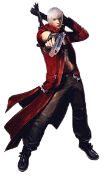
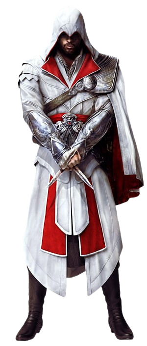
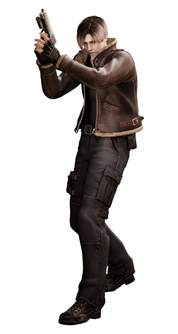
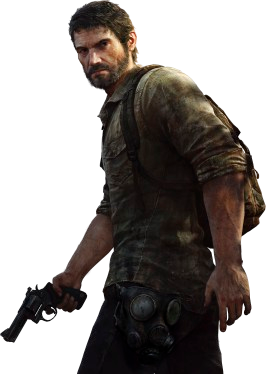

TOP 5 PERSONAGENS MAIS FODAS DA HISTÓRIA DOS GAMES
Dante Sparda

JACKPOT!!!
Dante, oque dizer deste grande personagem, Dante é o principal protagonista da saga de jogos hack-and-slash"Devil May Cry"
ele é conhecido por ser um protagonista cheio de carisma, brincalhão, zoeiro, mas também sério quando precisa, seu pai Sparda, era
O Lendário Cavaleiro Negro dos demônios, até que ele decide se rebelar contra os demonios e sela o portal entre o mundo dos demônios
e o mundo dos humanos, após estes acontecimentos, Sparda se relaciona com uma humana e assim nasce Dante e seu irmão gêmeo Vergil.
onde ele, diferente de Dante, renega a parte humana e abraça completamente o poder demoníaco, então estes irmãos seguem o legado de
seu pai, seguindo caminhos opostos para honrar o seu sangue.
Ezio Auditore da Firenze

"WE WORK IN THE DARK TO SERVE THE LIGHT. WE ARE ASSASSINS."
Ezio Auditore, simplesmente um dos assassinos mais lendários da história dos assassinos, Ezio era um jovem de uma família rica em
Firenze na Itália, até que uma grande tragéida acontece com sua família, e descobre o credo dos assassinos, ele decide buscar vingança
contra aqueles que matarem seu pai e irmãos, nessa jornada ele vai amadurecendo e conhecenddo mais sobre os Assassinos e Templários,
se tornando mentor da ordem, reconstruindo roma e acabando com a tirania de cesare borgia, indo pra constantinopla para conhecer mais
sobre os ensinamentos do maior assassino da ordem Altaïr Ibn-La'Ahad, e finalmente compreendendo sua missão e constitindo uma familia
e se tornando um dos maiores assassinos da história.
Leon Kennedy

"LEONNNN, HEEEELPPPP"
Leon Kennedy, o protagonista mais icônico e que elevou a saga Resident Evil a outro patamar, ele que protagonizou o segundo, o quarto,
sexto e o nono, que é o ultimo jogo da saga da cronologia original, um personagem muito lembrado pela sua personalidade brincalhona de lidar com as situações
mais malucas existentes kkkk, mesmo tendo um passado marcado por traumas, onde seu primeiro dia de trabalho explode um apocalipse zumbi na cidade, e desde
então ele é um agente especial contratado para lidar com essas situações paranormais gerados pela Umbrella Corporation.
John Marston
"IT'S JOHN MARSTON MICAH!"
John Marston, o cowboy mais badass dos games, le foi o protagonista que deu inicio a saga Red Dead Redemptiom, acompanhamos John
nessa história, sua familia foi sequestrada pelo governo, e só serão libertados caso John mate seus ex companheiros de gangue, e então
ele parte nesta jornada, fazendo inimigos e aliados, podendo fazer de tudo para que consiga voltar pra sua familia, John é o típico
persoonagem durão, badass, mas que tem um passado que ainda o atormenta, e agora, ele busca a sua redenção.
Joel Miller

"NO MATHER WHAT, YOU KEEP FINDING SOMETHING TO FIGTH FOR."
Joel Miller, um dos personagens mais fodas e complexos dos games, ele protagoniza o primeiro jogo The Last Of Us,
nessa história um apocalipse acontece, um fungo infecta as pessoas e se espalha rapidamente, fazendo os humanos
se isolarem em abrigos e comunidades, sendo extremamente perigoso explorar o mundo que antes era dos humanos, agora
completamente acabado e dominado pelo fungo, Joel recebe a missão de levar Ellie, uma garotinha que é imune ao virus,
e então eles criam uma grande relação e vivendo diversas situações juntos, o jogo mostra amuito bem o desenvolvimento de
Joel, o porque ele é este personagem durão e casca grossa, mas que tem sentimentos, ele perdeu sua filha no primeiro
dia do apocalipse, e desde então ele viveu neste mundo amargurado, e de repente ele se depara se importando com uma pessoa,
aquela pessoa em que ele vê sua filha, Ellie.